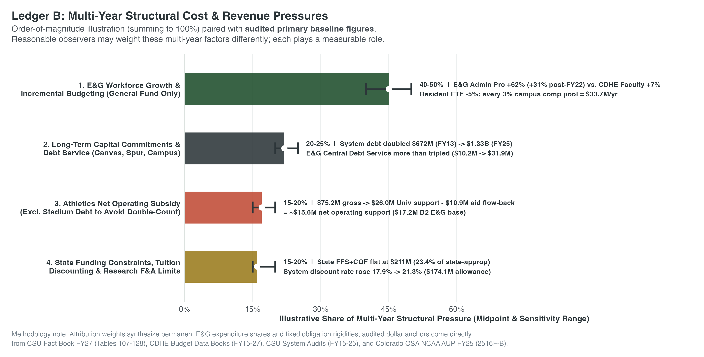
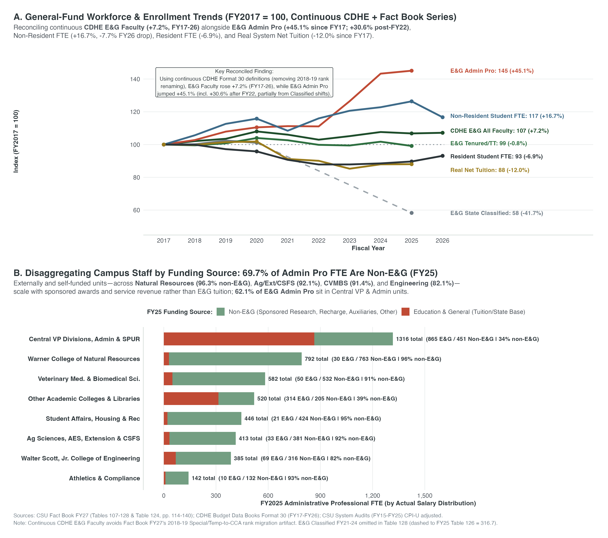

| Ledger B: Multi-Year Structural Context (Illustrative Order-of-Magnitude Ranges) | ||||
| Partitioned So Capital Debt and Operating Subsidies Are Not Double-Counted | ||||
| Group | Structural Factor | Illustrative Range | Audited Primary Anchor | Accounting Scope |
|---|---|---|---|---|
| 1 | E&G Workforce Growth & Incremental Budgeting | 40% – 50% (mid 45%) | E&G Admin Pro FTE +62.3% (858 -> 1,393, FY15-25; +326 FTE post-FY22) while continuous CDHE E&G Faculty grew +7.2% (FY17-26) & Resident FTE fell -5.0% (FY15-26). Excludes externally/self-funded staff. 3% comp pool = $33.7M/yr. | Order-of-magnitude illustration reflecting permanent payroll share of E&G expenditures (~70%+) shaped by legacy incremental budgeting. |
| 2 | Long-Term Capital Commitments & Debt Service | 20% – 25% (mid 22%) | CSU System Debt doubled from $671.9M (FY13) to $1,449.3M peak (FY23) / $1,330.7M (FY25) + $79.1M FY25 STRATA Laser bond. E&G Central Debt Service more than tripled from $10.2M (FY15) to $31.9M (FY26). | Captures hard bond covenants, debt service, and new building O&M/utilities that remain fixed during enrollment dips. |
| 3 | Athletics Net Operating Subsidy (Excl. Bonded Debt) | 15% – 20% (mid 17%) | Gross spending $75.24M (FY25), Direct+Indirect Univ Support $26.00M + $6.14M student fees, minus $10.93M athletic aid flow-back = ~$15.6M net institutional operating support (B2 E&G = $17.15M in FY26). | Excludes $206.96M bonded athletic debt (counted in Bucket 2 to prevent double-counting) and student fees paid outside E&G. |
| 4 | State Funding Limits, Tuition Discounting & F&A Scope | 15% – 20% (mid 16%) | Flat State FFS+COF ($211.1M = 23.4% of FY27 State Approp); System tuition discount rate rose 17.9% (FY17) -> 21.3% (FY25, $174.1M allowance); $76M IDCR does not cover E&G instructional deficits. | Reflects state structural cap under TABOR/Medicaid crowding + institutional merit aid competition for non-resident students. |
| Sources: CSU Fact Book FY27, CDHE Format 30 BDBs, Audits FY15–FY25, Colorado OSA Report 2516F-B. | ||||
Ledger B: Multi-Year Structural Context & Non-E&G Research Staffing
Reconciling Faculty vs. Administrative E&G Trends—and Separating Externally Funded Research, Clinical & Auxiliary Staff
While Ledger A tracks year-over-year changes entering FY28, Ledger B examines the longer-term trends between FY15 and FY26 that narrowed CSU’s Education & General (E&G) operating flexibility. The illustrative weights below serve strictly as order-of-magnitude context paired with audited baseline figures; reasonable observers may assign different relative importance to each factor.

1. Workforce Context & Separating Externally Funded Research, Clinical & Auxiliary Staff
Why All-Funds Headcount Ratios Require Fund Disaggregation
Public comparisons that cite CSU’s all-funds staff-to-faculty ratio (~3:1 in IPEDS and campus totals) combine externally and self-funded personnel with general-fund (E&G) positions. As a Carnegie R1 land-grant institution, CSU operates major research institutes, clinical services, and state service divisions—such as Engineering’s Cooperative Institute for Research in the Atmosphere (CIRA), Warner College’s Center for Environmental Management of Military Lands (CEMML), CVMBS’s Veterinary Teaching Hospital and diagnostic laboratories, the Agricultural Experiment Station, CSU Extension, and the Colorado State Forest Service—whose personnel scale directly with external grants, federal/state contracts, and fee-for-service revenues rather than drawing on general tuition dollars.
CSU Fact Book FY27 (Tables 122–124 & 128) separates E&G general funds from Non-E&G enterprise, auxiliary, and sponsored-program funds:
| FY25 Administrative Professional FTE by Funding Source (Fact Book FY27 Table 123) | |||
| 69.7% of Campus AP Personnel Work Outside E&G on External Grants, Recharge Centers, or Auxiliaries | |||
| Funding Group | FY25 AP FTE | Share of Total AP | Funding Classification |
|---|---|---|---|
| Education & General | 1,392.6 | 30.3% | E&G General Fund (Tuition / State) |
| Other Funds | 1,159.2 | 25.2% | Non-E&G (Grants, Recharge, Auxiliaries, Other) |
| Sponsored Programs | 871.2 | 18.9% | Non-E&G (Grants, Recharge, Auxiliaries, Other) |
| Recharge Centers | 735.6 | 16.0% | Non-E&G (Grants, Recharge, Auxiliaries, Other) |
| Auxiliaries | 439.4 | 9.6% | Non-E&G (Grants, Recharge, Auxiliaries, Other) |
| Source: CSU_Factbook_FY27_2026-10-22.pdf, Table 123 (p. 142). | |||
| FY25 Administrative Professional Personnel by College/Division and Fund Source (Fact Book FY27 Table 124) | |||||
| Academic Research, Clinical & State Agency Units Are Predominantly Non-E&G; 62.1% of E&G AP Sit in Central VP Divisions & SPUR | |||||
| Organizational Group | E&G AP FTE | Non-E&G AP FTE | Total AP FTE | % Non-E&G (Externally/Self-Funded) | Share of Campus E&G AP |
|---|---|---|---|---|---|
| Central VP Divisions, Admin & SPUR | 864.8 | 451.4 | 1,316.2 | 34.3% | 62.1% |
| Warner College of Natural Resources | 29.6 | 762.9 | 792.5 | 96.3% | 2.1% |
| Veterinary Med. & Biomedical Sci. | 50.1 | 532.4 | 582.5 | 91.4% | 3.6% |
| Other Academic Colleges & Libraries | 314.5 | 205.2 | 519.7 | 39.5% | 22.6% |
| Student Affairs, Housing & Rec | 21.4 | 424.4 | 445.8 | 95.2% | 1.5% |
| Ag Sciences, AES, Extension & CSFS | 32.8 | 380.6 | 413.4 | 92.1% | 2.4% |
| Walter Scott, Jr. College of Engineering | 69.0 | 316.3 | 385.3 | 82.1% | 5.0% |
| Athletics & Compliance | 10.0 | 132.3 | 142.3 | 93.0% | 0.7% |
| Source: CSU_Factbook_FY27_2026-10-22.pdf, Table 124. | |||||
Accounting Note on Sponsored & Clinical Units: Across research-intensive colleges and state service divisions—Warner College of Natural Resources (96.3% non-E&G), Ag Sciences / AES / Extension / CSFS (92.1% non-E&G), Veterinary Medicine & Biomedical Sciences (91.4% non-E&G), Student Affairs / Housing / Rec (95.2% non-E&G), and Walter Scott, Jr. College of Engineering (82.1% non-E&G)—most AP personnel are self-supporting outside E&G. Conversely, Central VP Divisions, Administration & CSU Spur house 864.8 of CSU’s 1,392.2 E&G AP FTE (62.1%).
Independent Verification Check: Reconciling the 2018–19 Faculty Rank Shift vs. Admin Growth
Empirical Finding That Overturned an Initial Assumption: Reading CSU Fact Book FY27 (Table 128 / rank tables) in isolation makes total E&G faculty appear to jump +43.3% (901.0 → 1,291.0 FTE between FY15 and FY25) because E&G Continuing and Contract ranks jumped from 2.2 FTE in FY15 to 332.2 in FY20. Cross-checking CSU’s April 2018 Faculty Manual Section E reform and continuous CDHE Format 30 Budget Data Books (FINAL_BDB_FY17-18–FY26-27) reveals that jump was largely an administrative reclassification, not net new faculty hiring:
- In April 2018, Faculty Council replaced legacy
"Special"and"Temporary"non-tenure-track labels with structuredContract,Continuing, andAdjunct(CCA) tracks; departments migrated existing instructors across FY19–FY20. BecauseFact Book FY27omits retired"Special"and"Temporary"codes from its historical trend tables, pre-2019 instructors vanish fromFB27prior-year columns and reappear in FY19–FY20 as newly mintedContract/Continuinglines. - By contrast, continuous
CDHE Format 30E&G Faculty FTE grew+7.2%over nine years (1,528.6in FY17 →1,638.5in FY26, and-0.8%from FY20’s1,651.1); Tenured/Tenure-Track E&G FTE grew+2.2%over ten years (817.3 → 835.4); and post-reclassification Fact Book E&G Faculty (FY20 → FY25) changed+0.1%(1,289.1 → 1,291.0). - Meanwhile, E&G Administrative Professional FTE rose
+62.3%(858.1 → 1,392.6, FY15–FY25), including a+30.6%(+326.3FTE) expansion between FY22 and FY25 alone—partially reflecting classified-to-AP transitions (-254.6E&G State Classified FTE FY15–FY25) alongside central, student-retention, compliance, IT, and mental-health roles.

High-level headcount tables cannot judge whether post-FY22 E&G Administrative Professional additions (such as student support, IT security, compliance, or classified-to-AP conversions) were operationally warranted; they establish strictly that general-fund non-faculty administrative growth (+30.6% post-FY22; +62.3% FY15–FY25) outpaced continuous E&G faculty growth (+7.2% FY17–FY26), Resident Student FTE (-5.0% FY15–FY26), and inflation-adjusted System net tuition (+4.4% FY15–FY25, -13.5% vs. FY20 peak) under a legacy incremental budgeting model that carried historical bases forward automatically.
| Reconciled E&G Workforce Growth vs. Student Demand and Real Net Tuition | |||
| Separating Continuous CDHE Faculty Counts (+7.2%) from Pre-2019 Rank Renaming Artifacts and Post-FY22 E&G Admin Growth (+30.6%) | |||
| Metric & Primary Source | Start Period | End Period | Change (%) |
|---|---|---|---|
| CDHE Format 30 Continuous E&G Faculty FTE (FY17 → FY26 Actual) | 1,528.6 | 1,638.5 | +7.2% |
| Fact Book E&G Tenured & Tenure-Track Faculty (FY15 → FY25) | 817.3 | 835.4 | +2.2% |
| Fact Book E&G Total Faculty Post-CCA Transition (FY20 → FY25) | 1,289.1 | 1,291.0 | +0.1% |
| Fact Book E&G Admin Professional FTE (FY15 → FY25) | 858.1 | 1,392.6 | +62.3% |
| — Post-FY22 E&G Admin Pro Sub-Period (FY22 → FY25) | 1,066.3 | 1,392.6 | +30.6% |
| Fact Book E&G State Classified Staff FTE* (FY15 → FY25) | 571.3 | 316.7 | -44.6% |
| CDHE Resident Student FTE (FY15 → FY26 Actual) | 17,535.0 | 16,664.2 | -5.0% |
| CDHE Non-Resident Student FTE (FY15 → FY26 Actual) | 5,828.6 | 8,242.4 | +41.4% |
| CSU System Real Net Tuition (FY25$M, FY15 → FY25) | $617.9M | $644.9M | +4.4% |
| Sources: CDHE Budget Data Books Format 30 (FY15–FY27); CSU Fact Book FY27 (Tables 107–128); CSU System Audits FY15–FY25 CPI-U adjusted. | |||
Expand to view full FY15–FY25 Fact Book Workforce Table & all 42 FY25 Table 124 Admin Pro Units
| 10-Year CSU Fort Collins Fact Book Workforce Table (FY15–FY25) | ||||||||
| *Pre-FY20 FB27 Faculty excludes retired Special/Temporary codes (use CDHE +7.2% for continuous trend); **Table 128 omits FY21–24 Classified E&G rows. | ||||||||
| Fiscal Year | E&G Admin Pro | E&G Faculty (FB27)* | E&G TTT | E&G NTT/CCA | E&G Classified** | E&G Total (incl. GA) | Non-E&G All Funds | All-Funds FTE |
|---|---|---|---|---|---|---|---|---|
| 2015 | 858.1 | 901.0 | 817.3 | 83.7 | 571.3 | 3,035.0 | 4,445.8 | 7,480.8 |
| 2016 | 924.3 | 912.1 | 821.6 | 90.5 | 561.3 | 3,168.4 | 4,431.4 | 7,599.8 |
| 2017 | 959.9 | 925.1 | 842.5 | 82.6 | 543.4 | 3,273.0 | 4,511.9 | 7,784.9 |
| 2018 | 986.4 | 927.2 | 838.6 | 88.6 | 544.4 | 3,333.7 | 4,769.8 | 8,103.5 |
| 2019 | 1,035.8 | 1,082.4 | 848.8 | 233.6 | 556.8 | 3,568.0 | 4,899.8 | 8,467.8 |
| 2020 | 1,060.7 | 1,289.1 | 876.2 | 412.9 | 549.2 | 3,867.0 | 5,039.3 | 8,906.3 |
| 2021 | 1,067.9 | 1,277.4 | 864.7 | 412.7 | — | 3,301.9 | 3,885.7 | 8,906.1 |
| 2022 | 1,066.3 | 1,253.9 | 841.2 | 412.7 | — | 3,212.1 | 3,998.8 | 8,800.3 |
| 2023 | 1,214.1 | 1,279.4 | 837.8 | 441.6 | — | 3,400.9 | 4,092.2 | 9,060.9 |
| 2024 | 1,375.4 | 1,311.6 | 857.2 | 454.4 | — | 3,616.0 | 4,382.2 | 9,554.3 |
| 2025 | 1,392.6 | 1,291.0 | 835.4 | 455.6 | 316.7 | 3,954.6 | 5,751.3 | 9,705.9 |
| Source: CSU_Factbook_FY27_2026-10-22.pdf, Tables 122, 123, and 128. | ||||||||
| FY25 Administrative Professional FTE Across All 42 Fact Book Table 124 Units | |||||
| Ordered by E&G General-Fund FTE Footprint | |||||
| Unit | Group | E&G AP | Non-E&G AP | Total AP | Non-E&G % |
|---|---|---|---|---|---|
| VP Enrollment + Access | Central Admin, VP Divisions & SPUR | 108.9 | 1.4 | 110.3 | 1.3% |
| VP Research | Central Admin, VP Divisions & SPUR | 102.1 | 100.4 | 202.5 | 49.6% |
| VP University Operations | Central Admin, VP Divisions & SPUR | 100.4 | 67.1 | 167.5 | 40.1% |
| VP Information Technology | Central Admin, VP Divisions & SPUR | 97.3 | 26.3 | 123.6 | 21.3% |
| University Advancement | Central Admin, VP Divisions & SPUR | 90.7 | 26.6 | 117.3 | 22.7% |
| Health and Human Sciences | Academic Colleges & Libraries | 82.0 | 85.4 | 167.4 | 51.0% |
| Natural Sciences | Academic Colleges & Libraries | 76.8 | 76.1 | 152.9 | 49.8% |
| Walter Scott Jr College of Engr | Academic Colleges & Libraries | 69.0 | 316.3 | 385.3 | 82.1% |
| Business | Academic Colleges & Libraries | 68.5 | 11.6 | 80.1 | 14.5% |
| Liberal Arts | Academic Colleges & Libraries | 66.5 | 30.2 | 96.7 | 31.2% |
| VP Undergraduate Affairs | Central Admin, VP Divisions & SPUR | 53.4 | 36.2 | 89.6 | 40.4% |
| Veterinary Medicine & Biomedical Sci | Academic Colleges & Libraries | 50.1 | 532.4 | 582.5 | 91.4% |
| President's Office-Inclusive Excellence | Central Admin, VP Divisions & SPUR | 46.3 | 6.9 | 53.2 | 13.0% |
| University Marketing + Communications | Central Admin, VP Divisions & SPUR | 45.4 | 5.4 | 50.8 | 10.6% |
| SPUR | Central Admin, VP Divisions & SPUR | 40.9 | 21.9 | 62.8 | 34.9% |
| International Programs | Central Admin, VP Divisions & SPUR | 35.5 | 15.0 | 50.5 | 29.7% |
| VP Human Resources | Central Admin, VP Divisions & SPUR | 33.8 | 5.2 | 39.0 | 13.3% |
| Agricultural Sciences | Academic Colleges & Libraries | 32.8 | 146.1 | 178.9 | 81.7% |
| Warner College of Natural Resources | Academic Colleges & Libraries | 29.6 | 762.9 | 792.5 | 96.3% |
| VP Faculty Affairs | Central Admin, VP Divisions & SPUR | 28.4 | 0.9 | 29.3 | 3.1% |
| Provost + Executive Vice President | Central Admin, VP Divisions & SPUR | 25.8 | 12.4 | 38.2 | 32.5% |
| Libraries | Academic Colleges & Libraries | 20.7 | 1.9 | 22.6 | 8.4% |
| Graduate School | Central Admin, VP Divisions & SPUR | 14.7 | 0.3 | 15.0 | 2.0% |
| VP Engagement | Central Admin, VP Divisions & SPUR | 14.5 | 110.1 | 124.6 | 88.4% |
| President's Office-Athletic Compliance | Athletics & Compliance | 10.0 | 0.0 | 10.0 | 0.0% |
| President's Office-President | Central Admin, VP Divisions & SPUR | 8.9 | 0.4 | 9.3 | 4.3% |
| VPSA - Well-being-Health Network | Student Affairs / Auxiliaries | 8.7 | 103.7 | 112.4 | 92.3% |
| VPSA - Student Support & Intervention | Student Affairs / Auxiliaries | 8.6 | 18.9 | 27.5 | 68.7% |
| VP Student Affairs-VP | Central Admin, VP Divisions & SPUR | 6.7 | 8.7 | 15.4 | 56.5% |
| Accounting Pools, Central, Other | Central Admin, VP Divisions & SPUR | 5.0 | 5.2 | 10.2 | 51.0% |
| Division of Compliance | Central Admin, VP Divisions & SPUR | 4.7 | 0.0 | 4.7 | 0.0% |
| VPSA - Student Success | Student Affairs / Auxiliaries | 3.0 | 28.5 | 31.5 | 90.5% |
| VPSA - Engagement and Belonging | Student Affairs / Auxiliaries | 1.1 | 62.6 | 63.7 | 98.3% |
| Administrative Communications | Central Admin, VP Divisions & SPUR | 1.0 | 0.0 | 1.0 | 0.0% |
| Centers for Engagement | Central Admin, VP Divisions & SPUR | 0.4 | 0.0 | 0.4 | 0.0% |
| Agric Sciences-Agric Experiment Station | State Agencies / Extension | 0.0 | 55.5 | 55.5 | 100.0% |
| Board of Governors of CSU System | Central Admin, VP Divisions & SPUR | 0.0 | 1.0 | 1.0 | 100.0% |
| CSU Extension | State Agencies / Extension | 0.0 | 26.7 | 26.7 | 100.0% |
| Natural Resources-Colo State Forest Svc | State Agencies / Extension | 0.0 | 152.3 | 152.3 | 100.0% |
| President's Office-Athletics | Athletics & Compliance | 0.0 | 132.3 | 132.3 | 100.0% |
| VPSA - On and Off Campus Life | Student Affairs / Auxiliaries | 0.0 | 183.5 | 183.5 | 100.0% |
| VPSA - Well-being-Campus Recreation | Student Affairs / Auxiliaries | 0.0 | 27.2 | 27.2 | 100.0% |
2. State Funding Limits, Tuition Discounting & Research F&A Mechanics

Three structural revenue constraints help explain why active teaching schedules and record external grant volume do not automatically close an E&G operating gap:
- Rising Institutional Tuition Discounting: In CSU System audited financial statements (
audits_system_fy15_fy25), scholarship allowances increased from $114.4M (19.9% discount rate in FY15; 17.9% in FY17) to $174.1M (21.3% discount rate) in FY25. Within Fort Collins E&G budgets (bdb_real_fy17_fy27), institutional aid grew from $47.2M (FY15) to $88.5M (FY26) and $96.3M estimated for FY27, offsetting part of nominal tuition rate increases (3.5%resident /4.0%NR /3.5%differential in FY27). - State Funding Constraints: In FY27 (
obs_state_approp_fy24_fy27), State Fee-for-Service ($161.60M) and COF stipends ($49.45M) supply $211.05M (23.4% of the $900.98M State Appropriated / E&G budget)—virtually flat versus FY26 ($210.94M) under Colorado’s TABOR limits and state Medicaid pressures. - Why Sponsored Research Grants Do Not Directly Cross-Subsidize E&G Instruction: CSU System grants and contracts reached $548.0M in FY25 (
audits) and Fort Collins Indirect Cost Recovery (IDCR) reached $76.0M (obs). Federal F&A recovery only partially reimburses dedicated research compliance, startup packages, cost-share commitments, and laboratory infrastructure rather than generating discretionary cash for general undergraduate instruction.
| CSU Fort Collins State Appropriated / E&G Revenue Mix (FY24–FY27 Original Budgets) | |||||||
| State Funding Remained Near $211M (23.4%) as Base Costs Expanded Toward $901M | |||||||
| Fiscal Year | State FFS | State COF | State Total | State % | Tuition Approp. | IDCR (F&A) | Total State Approp. Budget |
|---|---|---|---|---|---|---|---|
| 2024 | $148.35M | $48.66M | $197.02M | 24.4% | $465.93M | $65.00M | $807.79M |
| 2025 | $158.69M | $48.72M | $207.42M | 24.7% | $483.01M | $71.00M | $840.97M |
| 2026 | $161.91M | $49.04M | $210.94M | 23.8% | $508.62M | $76.00M | $885.16M |
| 2027 | $161.60M | $49.45M | $211.05M | 23.4% | $514.53M | $76.00M | $900.98M |
| Source: CSU Office of Budgets FY24–FY27 Operating Budget Summaries. | |||||||
(Comparability Note: In Office of Budgets ColOBS tables, $41.64M of institutional financial aid moved from XA Central into P1 Enrollment & Access in FY19, and ~$111.26M of centrally pooled XA Employee Fringe Benefits decentralized across academic and support units in FY26. Figure 5 isolates both transfers explicitly.)